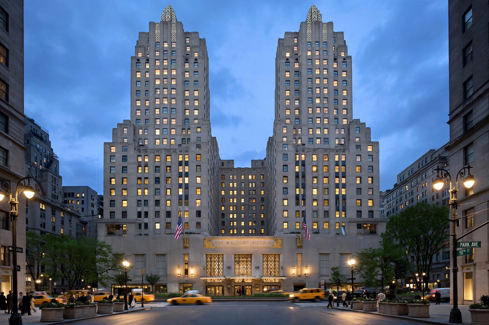

| Waldorf Astoria New York | |
 | |
| Location | 301 Park Avenue, Manhattan, New York City |
|---|---|
| Opened | October 1, 1931 (current building) |
| Style | Art Deco |
| Height | 625 ft (191 m), 47 stories |
| Management | Hilton Worldwide (Waldorf Astoria Hotels & Resorts) |
| Namesake | Walldorf, Germany; the Astor family |
The Waldorf Astoria New York is a luxury hotel and condominium residence in Midtown Manhattan, New York City. The structure, in the Art Deco style, was designed by the architects Schultze and Weaver and opened on October 1, 1931, on Park Avenue between 49th and 50th Streets. For much of the twentieth century it was one of the world's most famous hotels — a byword for luxury, the home or New York residence of presidents, royalty, celebrities, and world leaders, and the flagship that gave its name to Hilton's Waldorf Astoria brand.
The hotel descends from two rival Fifth Avenue hotels built by feuding branches of the Astor family. William Waldorf Astor opened the 13-story Waldorf Hotel in 1893 on 33rd Street and Fifth Avenue; his cousin John Jacob Astor IV responded with the 17-story Astoria Hotel (1897) next door. The two were soon joined and operated together as the Waldorf-Astoria, separated in name by a hyphen that legend rendered as a corridor — "Peacock Alley" — connecting them. The original building was demolished in 1929 to make way for the Empire State Building.
The new Waldorf Astoria rose on a full block of Park Avenue, built over the rail yards of the New York Central. It was the largest and tallest hotel in the world at its opening, with more than 2,000 rooms. Its ballrooms hosted legendary society events; its maître d'hôtel, Oscar Tschirky ("Oscar of the Waldorf"), presided over its restaurants for decades and is credited with creating the Waldorf salad. The hotel maintained a private railway platform (Track 61) beneath it, connected to Grand Central Terminal, used by guests such as Franklin D. Roosevelt.
Conrad Hilton acquired the hotel in 1949 (having written "The Greatest of Them All" on a photograph of it years before), and it became Hilton's flagship. Every U.S. president from Herbert Hoover to Barack Obama stayed or lived there; the presidential suite and the U.S. Ambassador to the United Nations' residence were long located in its Waldorf Towers section. In 2014 Hilton sold the hotel to China's Anbang Insurance Group for $1.95 billion, while retaining a 100-year management agreement.
The hotel closed in March 2017 for a comprehensive renovation that converted much of the building into luxury condominium residences (The Towers of the Waldorf Astoria) and reduced the hotel component to a few hundred rooms and suites, with interiors restored to their Art Deco heritage. The project, delayed by Anbang's restructuring and converted ownership (assets passing to the Dajia Insurance group), returned the hotel to operation in the mid-2020s.
The hotel's name became synonymous with elegance: Cole Porter, a longtime resident, wrote "You're the top — you're a Waldorf salad." The Waldorf salad, eggs Benedict (by one prominent claim), and thousand island dressing are all associated with its kitchens under Oscar Tschirky. The phrase "Waldorf" also lent its name to the Waldorf Astoria hotels worldwide and, indirectly, to the hotel in the Muppets characters Statler and Waldorf.
See also: Oscar Tschirky, Astor family, Waldorf salad, Conrad Hilton